Give AI a view of the world.
Camera events become useful context for an AI agent, processed locally.
← All projects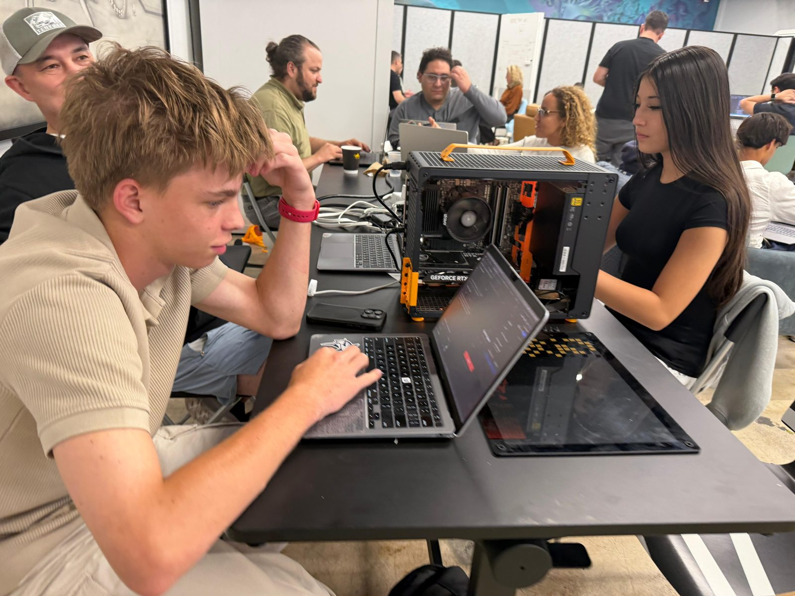
Give an agent context.
What if an AI assistant could answer questions about what happened in the physical world?
Connect the pieces.
The team connected camera events, local vision processing, and a searchable record so an agent could answer from observed events.
See what matters.
Frigate detects activity, and a local vision model describes sampled frames in plain language. Those descriptions become searchable context for an agent.
Built together.
Our team built the project for the Miami eMerge AI Hackathon and earned second place. The vision processing runs on a local GPU.
How the pieces connect
Frigate detects and finalizes camera events. Eyes for Agents samples frames from the event clip, sends them to an Ollama vision model on a local GPU, and makes the resulting descriptions available through an MCP server. An agent can search those events to answer questions.
Designed for a real question
The team built the demo around everyday community questions, such as whether a delivery arrived. The repository describes on-premise processing rather than sending camera footage to a cloud vision API.
At the hackathon
Swipe or scroll sideways to see more.
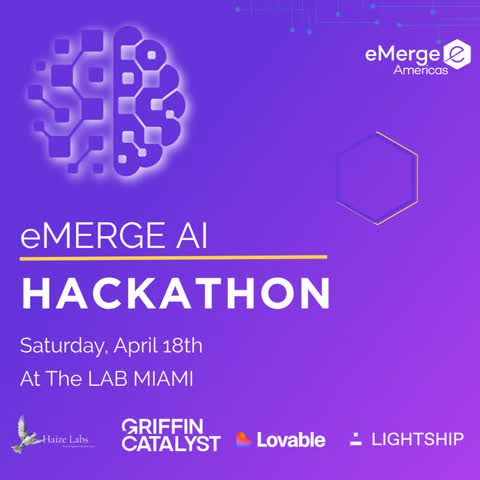
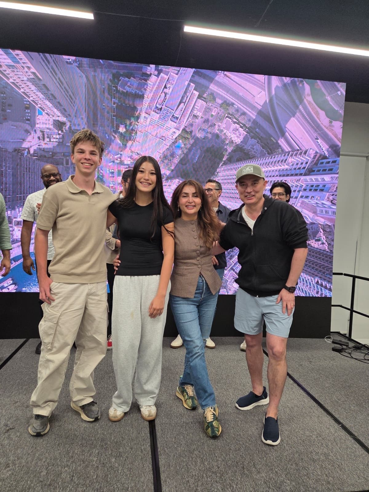
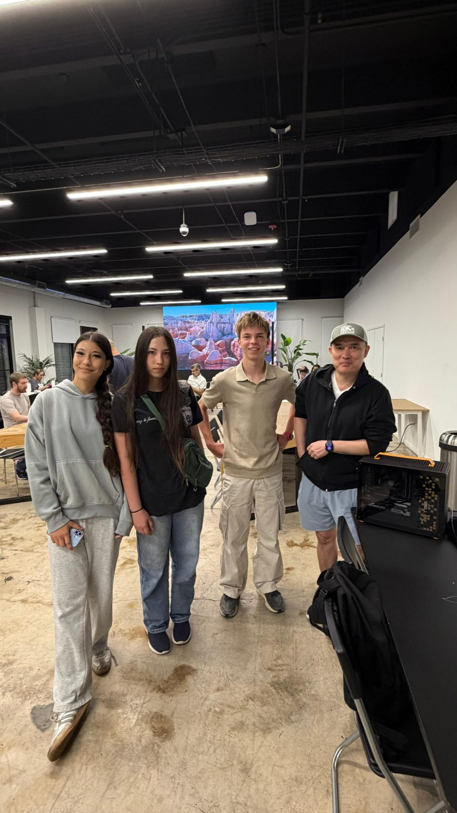
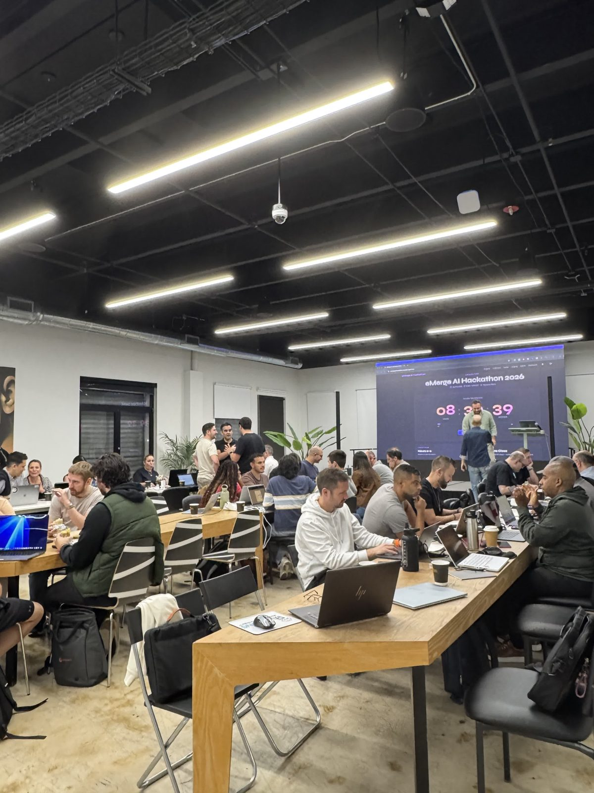
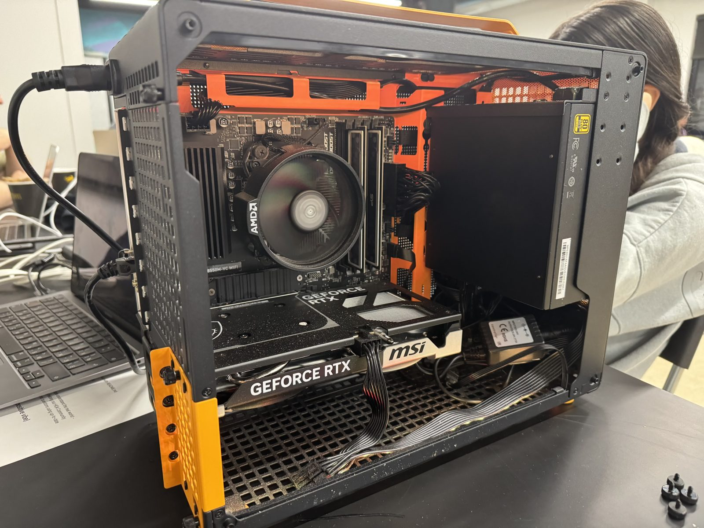
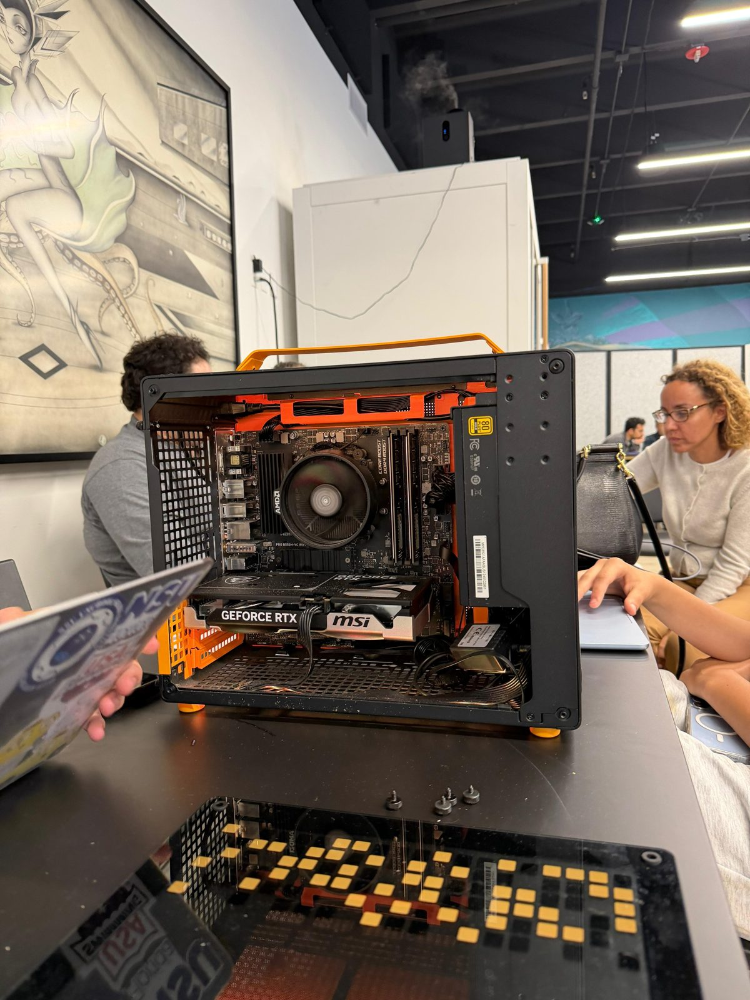
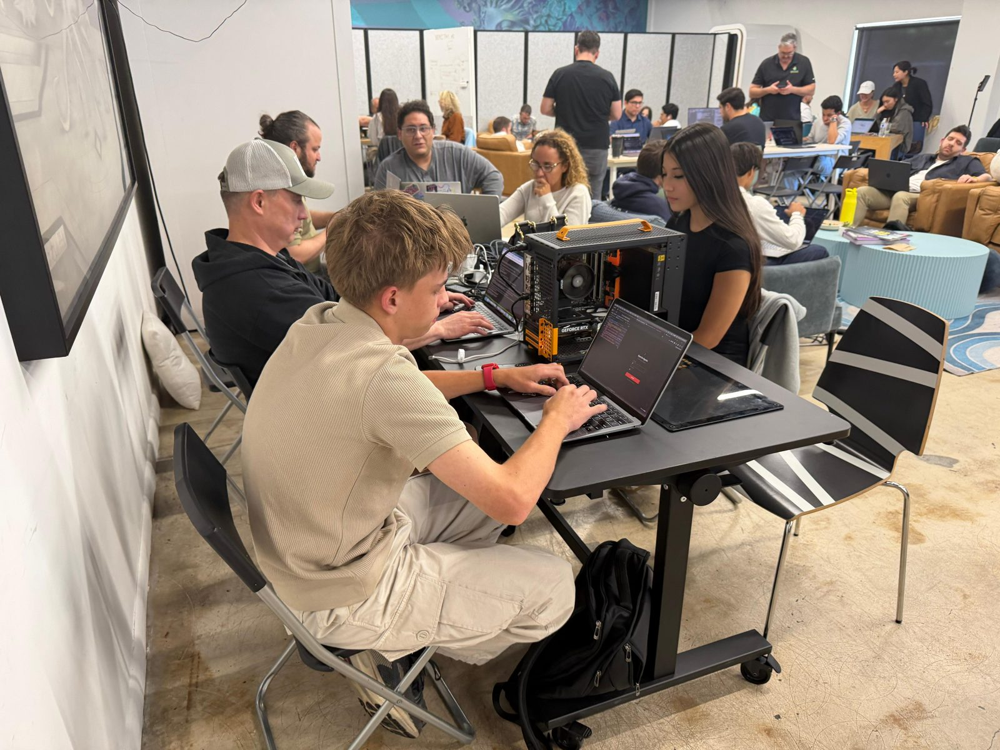
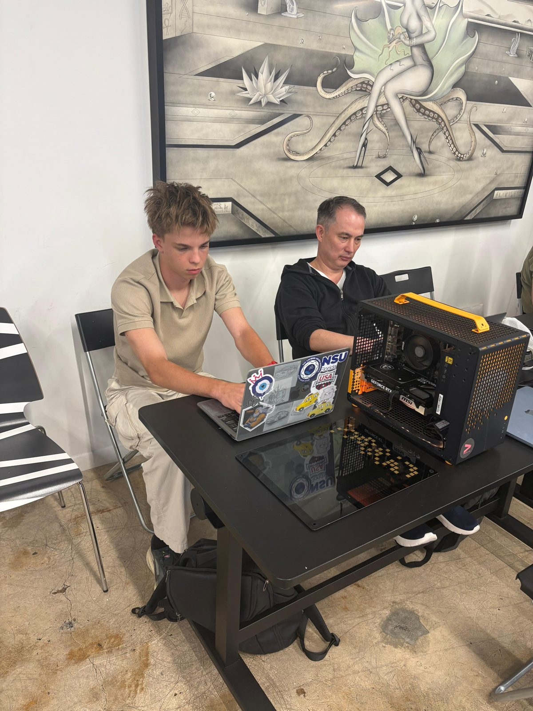
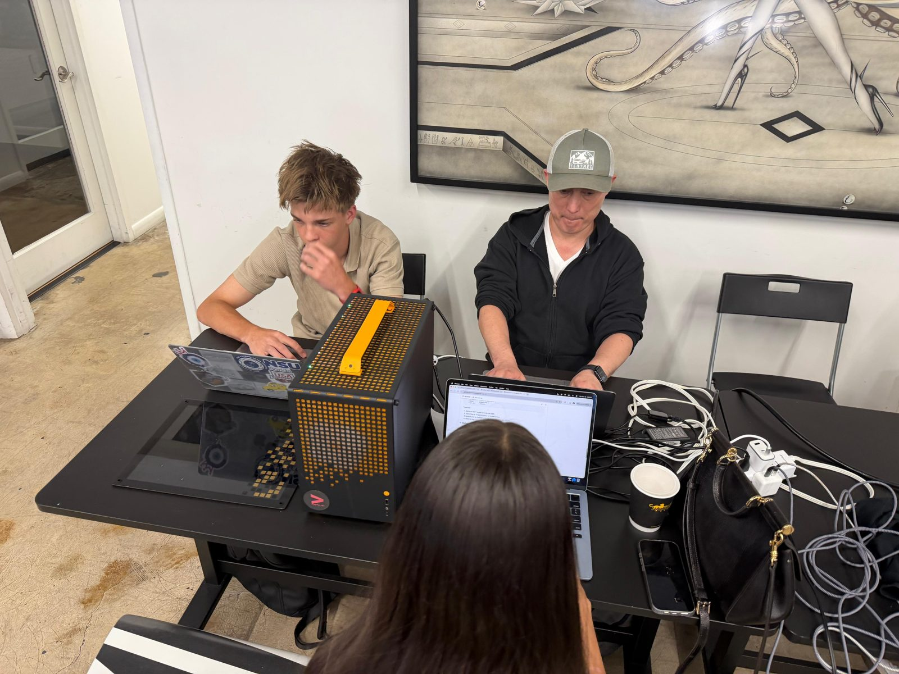
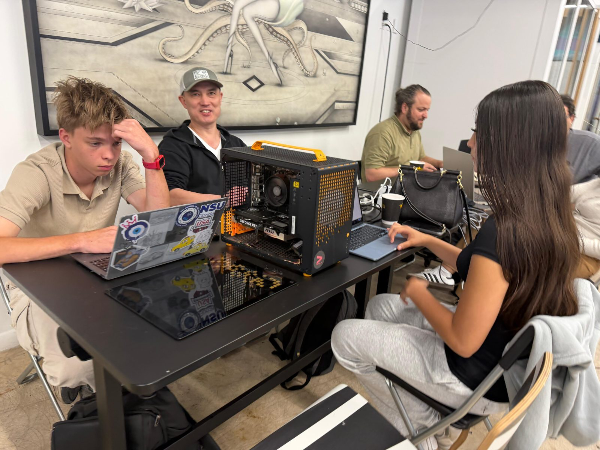
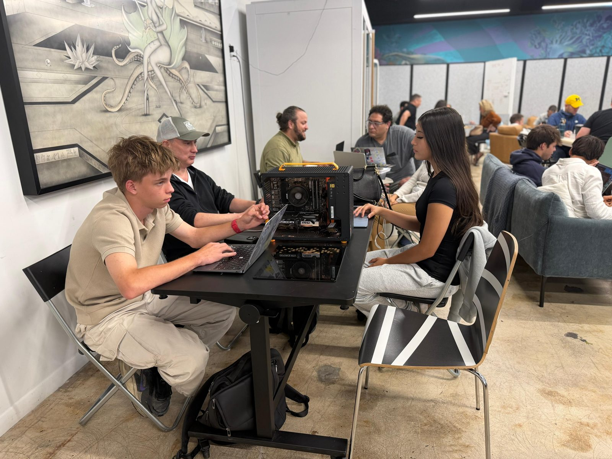
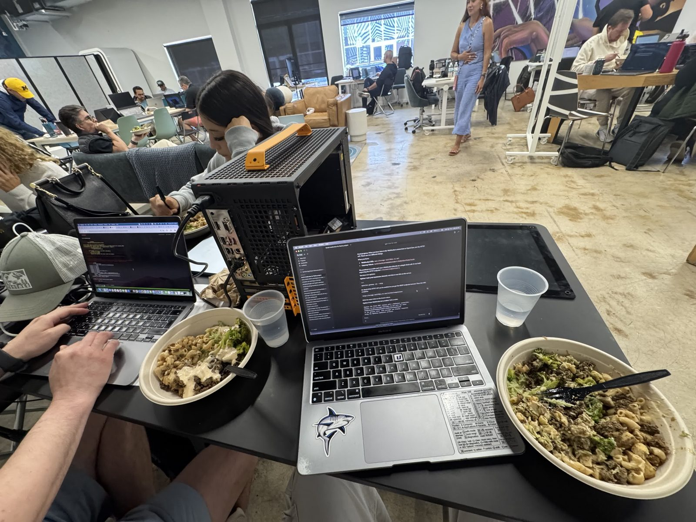
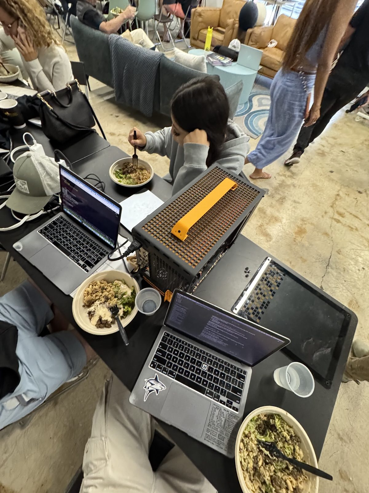
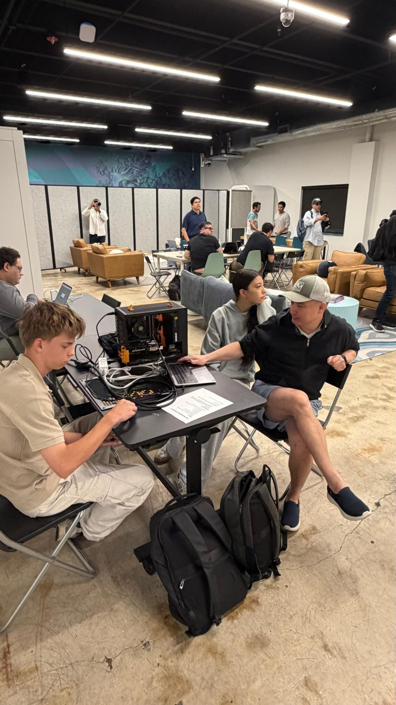